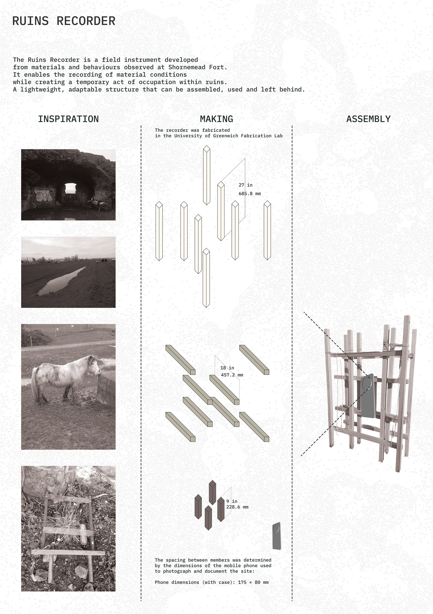
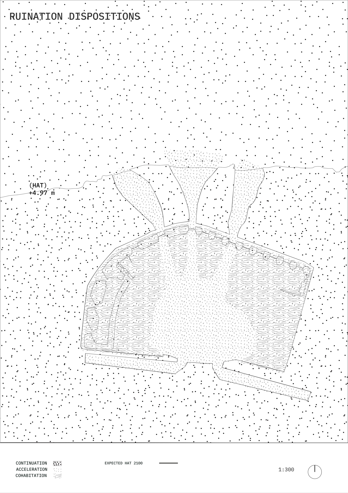
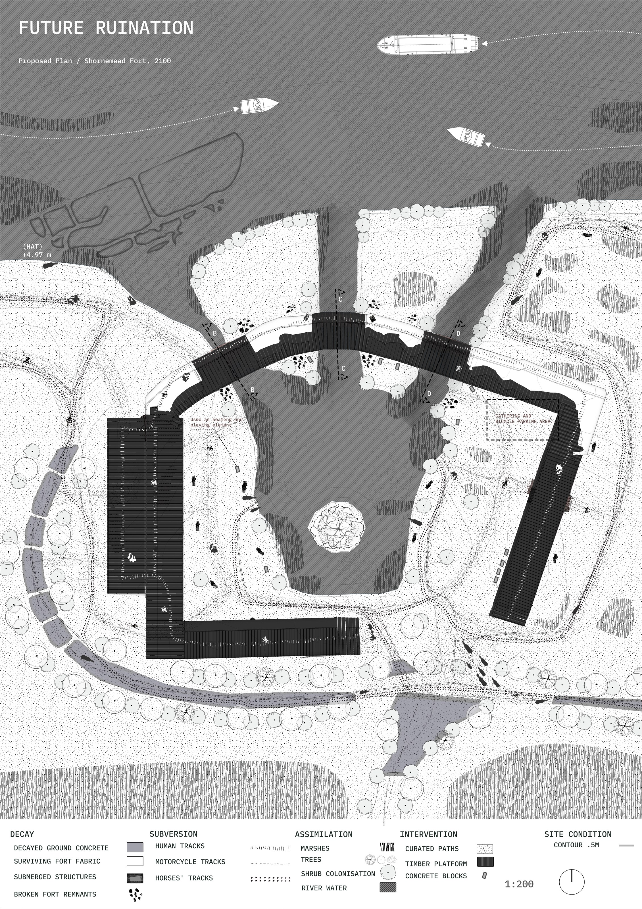
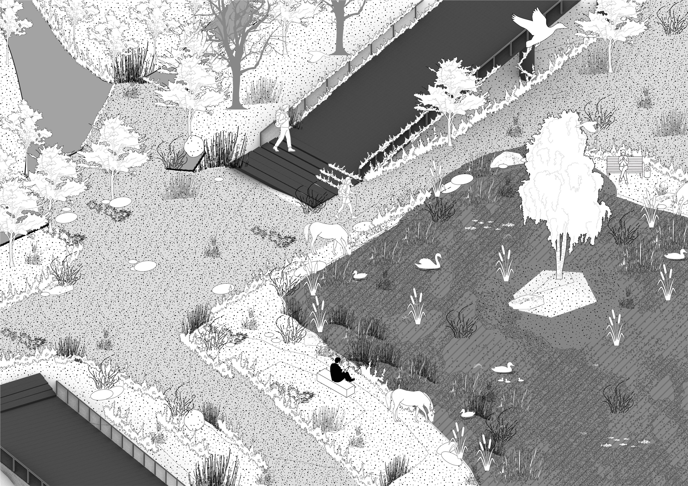
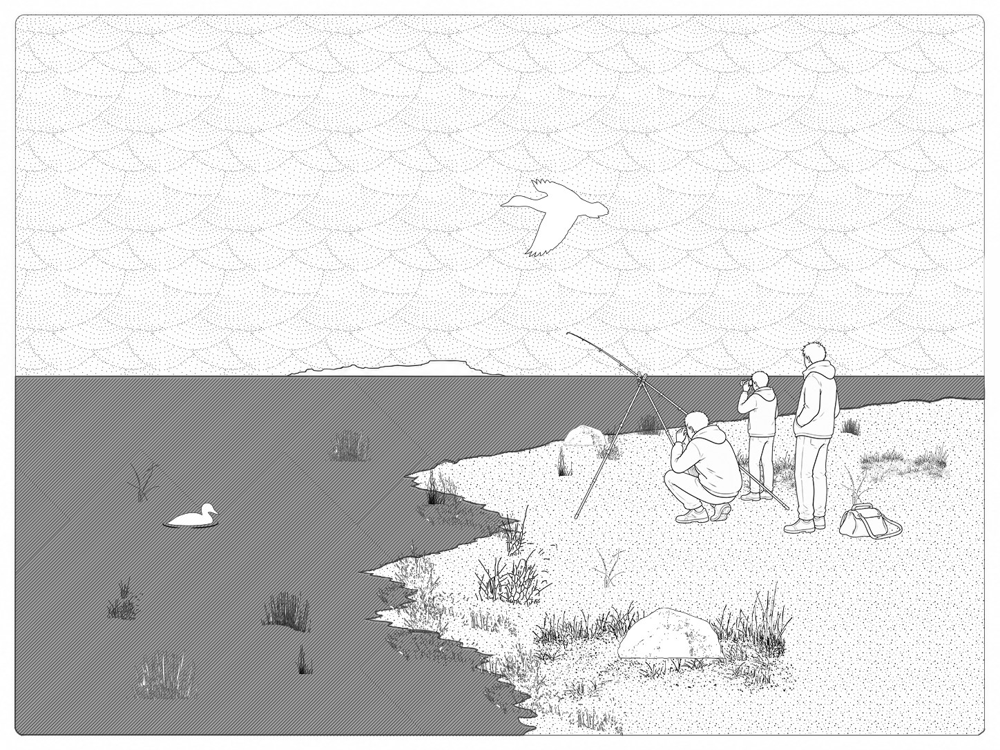
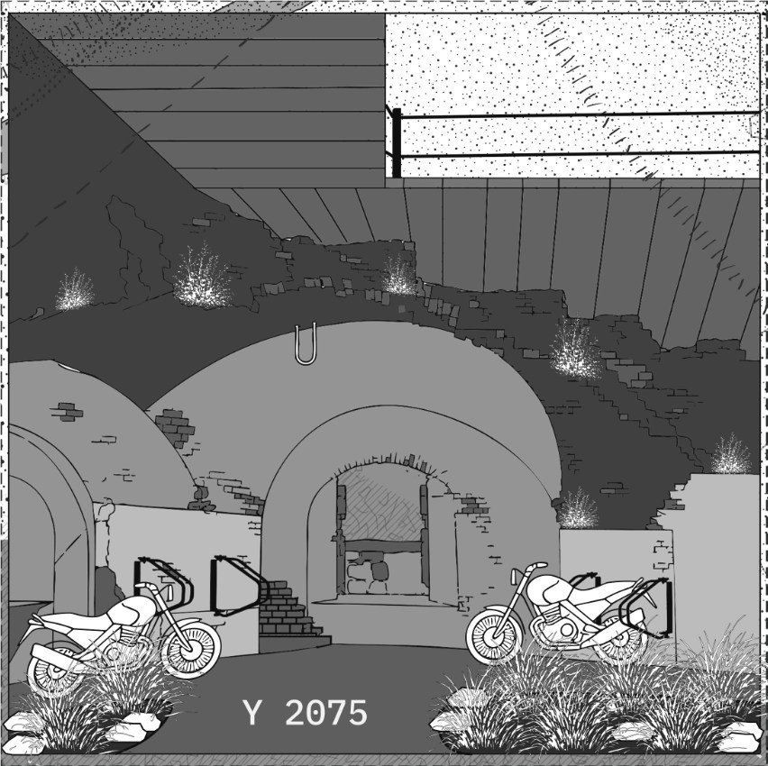

02 / CENTRAL PROJECT
Ruins Regrounded
At Shornemead Fort, Ruins Regrounded treats decay as an active landscape process rather than a defect to erase. Repeated field recording identifies three conditions—decay, subversion and assimilation—and answers them through continuation, acceleration and cohabitation. A lightweight route and elevated platforms connect the fort, marsh and Thames while retaining flooded chambers, informal occupations and ecological succession. Twelve openings redistribute movement, water, sediment, vegetation and use across the monument. The proposal remains intentionally unfinished: a public, multispecies ground that can be revisited, misused and altered over time.
WHOLE / 00
The A0 is the field.
The complete composite drawing remains the entry point. The sequence below moves from territorial evidence to a precise spatial proposition, then tests how that proposition is occupied over time.
READ + RECORD / 01
History, traces and field instruments
Ruination is mapped as a sequence of military use, abandonment, informal occupation and ecological return. The recorder turns observation into a temporary act of inhabitation.

From defence infrastructure to scheduled ruin, habitat and public destination.
{kind=link}

A lightweight instrument for recording material conditions while temporarily occupying the site.

Decay, subversion and assimilation become a shared spatial notation.
POSITION / 02
Work with what is already acting
Continuation retains active traces. Acceleration directs selected processes of change. Cohabitation negotiates human and non-human occupation.
{kind=link}

A site-wide allocation of three responses to the processes already underway.
{kind=link}

The fort becomes a porous route, tidal room and civic ground without being restored to a fixed historical image.
INHABIT / 03
A route through fort, marsh and tide
Platforms touch the ruin selectively. Existing fabric, open water and colonising vegetation remain legible as separate but connected systems.

Walking, play, performance, animals and succession share the elevated circuit.

The intervention reads as a continuous line while the ruined field stays open and unfinished.
FUTURE OCCUPATION / 04
Let use exceed authorship
The final views test ordinary, improvised and seasonal occupations rather than a single prescribed programme.
{kind=link}

Wet habitat, informal rest, grazing and movement coexist.
{kind=link}

Fishing, watching and waiting become valid forms of public occupation.
{kind=link}

The future is not clean: new habits, damage and growth continue the ruin.
DOWNLOAD / COMPLETE PROJECT
Keep the work intact.
The edited sequence is for the website. The full ENVT 1126 portfolio remains available as the complete project record.
Download Ruins Regrounded PDF →